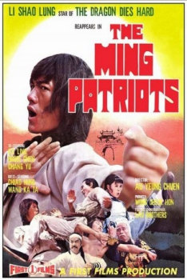

Also known as:Revenge of the Patriots
Country:ZH, 89 minutes
Spoken languages:Mandarin
Genres:Drama, Action
Director(s):Tsai Yang-Ming
Writer(s):
Video Codec:Unknown
Number: 818


Certification:R
Storyline:
Bruce Li stars as a kung fu fighter who with a group friends defies the Ching Dynasty, using his martial arts and sense of honor he succeeds though not without some personal losses.
Cast:

Medium: Original DVD,
Loaned: No
Aspect ratio: Unknown